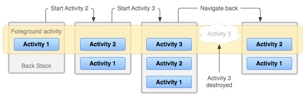
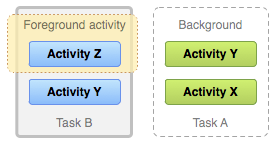
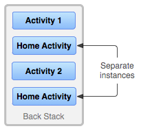
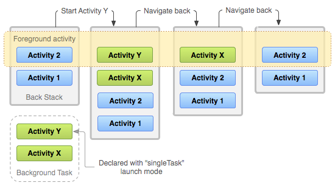

任务是用户尝试在应用中完成某件事时与之交互的一组 Activity。这些 Activity 按照各自打开的顺序排列在一个称为返回栈的栈中。
例如，电子邮件应用可能有一个用于显示新邮件列表的 Activity。当用户选择一封邮件时，会打开一个新的 Activity 来查看该邮件。这个新 Activity 会被添加到返回栈中。随后，当用户点按返回按钮或执行返回手势时，这个新 Activity 会结束，并从栈中弹出。
任务及其返回栈的生命周期
设备主屏幕是大多数任务的起点。当用户触摸应用启动器或主屏幕上的应用图标或快捷方式时，该应用的任务会进入前台。如果该应用还没有任务，系统就会创建一个新任务，并打开该应用的主 Activity，使其成为栈中的根 Activity。
当当前 Activity 启动另一个 Activity 时，新 Activity 会被压入栈顶并获得焦点。前一个 Activity 仍然留在栈中，但处于已停止状态。当 Activity 停止时，系统会保留其用户界面的当前状态。当用户执行返回操作时，当前 Activity 会从栈顶弹出并被销毁。前一个 Activity 会恢复运行，其 UI 的先前状态也会恢复。
栈中的 Activity 永远不会重新排列；它们只会在由当前 Activity 启动时入栈，在用户通过返回按钮或手势关闭它们时出栈。因此，返回栈按照后进先出的对象结构运作。图 1 展示了 Activity 压入返回栈和从返回栈弹出的时间线。

随着用户继续点按返回按钮或执行返回手势，栈中的每个 Activity 都会被弹出，露出前一个 Activity，直到用户返回主屏幕或任务开始时正在运行的那个 Activity。当栈中的所有 Activity 都被移除后，该任务也就不再存在。
启动器根 Activity 的返回点按行为
启动器根 Activity 是指声明了同时包含 ACTION_MAIN 和 CATEGORY_LAUNCHER 的 Intent Filter 的 Activity。这些 Activity 很特殊，因为它们充当从应用启动器进入应用的入口，并用于启动任务。
当用户在启动器根 Activity 中点按返回按钮或执行返回手势时，系统会根据设备运行的 Android 版本以不同方式处理该事件。
- Android 11 及更低版本上的系统行为
- 系统会结束该 Activity。
- Android 12 及更高版本上的系统行为
系统会将该 Activity 及其任务移至后台，而不是结束该 Activity。这一行为与使用主屏幕按钮或手势离开应用时的默认系统行为一致。
在大多数情况下，这一行为意味着用户可以更快地从温状态恢复应用，而无需从冷状态完全重新启动应用。
如果需要提供自定义返回导航，我们建议使用 AndroidX Activity API，而不是重写
onBackPressed()。如果没有组件拦截系统的返回点按操作，AndroidX Activity API 会自动交由适当的系统行为处理。不过，如果应用重写了
onBackPressed()来处理返回导航并结束 Activity，请更新实现，使其调用super.onBackPressed()，而不是结束 Activity。调用super.onBackPressed()会在适当时将 Activity 及其任务移至后台，并为用户提供在不同应用之间更一致的导航体验。
后台任务与前台任务

任务是一个完整的单元，当用户开始新任务或转到主屏幕时，它可以移至后台。处于后台时，任务中的所有 Activity 都会停止，但任务的返回栈会保持完整——如图 2 所示，当另一个任务运行时，该任务会失去焦点。随后，任务可以返回前台，让用户从离开的位置继续。
考虑以下任务流程：当前任务 A 的栈中有三个 Activity，其中两个位于当前 Activity 之下：
用户使用主屏幕按钮或手势，然后从应用启动器启动一个新应用。
当主屏幕出现时，任务 A 进入后台。当新应用启动时，系统会为该应用启动一个任务（任务 B），该任务拥有自己的 Activity 栈。
与该应用交互后，用户再次返回主屏幕，并选择最初启动任务 A 的应用。
此时，任务 A 进入前台——栈中的三个 Activity 都保持完整，栈顶的 Activity 恢复运行。此时，用户也可以通过转到主屏幕并选择启动任务 B 的应用图标，或从最近使用的应用屏幕中选择该应用的任务，切换回任务 B。
多个 Activity 实例

由于返回栈中的 Activity 永远不会重新排列，如果应用允许用户从多个 Activity 启动某个特定 Activity，系统会创建该 Activity 的一个新实例并将其压入栈中，而不是将它的任何先前实例移至栈顶。因此，应用中的一个 Activity 可能会被实例化多次，甚至来自不同的任务，如图 3 所示。
如果用户使用返回按钮或手势向后导航，Activity 的实例会按照它们打开的顺序逐一显现，每个实例都有自己的 UI 状态。不过，如果不希望某个 Activity 被实例化多次，可以修改此行为。有关详情，请参阅管理任务一节。
多窗口环境
当应用在 Android 7.0（API 级别 24）及更高版本支持的多窗口环境中同时运行时，系统会分别管理每个窗口的任务。每个窗口都可以拥有多个任务。在 Chromebook 上运行的 Android 应用也是如此：系统按窗口管理任务或任务组。
生命周期回顾
Activity 和任务的默认行为总结如下：
当 Activity A 启动 Activity B 时，Activity A 会停止，但系统会保留它的状态，例如滚动位置和表单中输入的任何文本。如果用户在 Activity B 中点按返回按钮或使用返回手势，Activity A 会恢复运行，其状态也会恢复。
当用户使用主屏幕按钮或手势离开任务时，当前 Activity 会停止，其任务会进入后台。系统会保留任务中每个 Activity 的状态。如果用户之后通过选择启动该任务的启动器图标来恢复任务，该任务会进入前台，并恢复栈顶的 Activity。
如果用户点按返回按钮或执行返回手势，当前 Activity 会从栈中弹出并被销毁。栈中前一个 Activity 会恢复运行。当 Activity 被销毁时，系统不会保留该 Activity 的状态。
当应用在运行 Android 12 或更高版本的设备上运行时，启动器根 Activity 的这一行为有所不同。
Activity 可以被实例化多次，甚至可以由其他任务实例化。
管理任务
Android 管理任务和返回栈时，会将连续启动的所有 Activity 放在同一个任务中，排列成后进先出的栈。这适用于大多数应用，通常无需担心 Activity 如何与任务关联，或如何存在于返回栈中。
不过，你可能决定改变通常的行为。例如，希望应用中的某个 Activity 在启动时开启一个新任务，而不是放入当前任务；或者，启动 Activity 时，希望将其现有实例带到前面，而不是在返回栈顶部创建一个新实例；又或者，希望用户离开任务时，返回栈中除根 Activity 外的所有 Activity 都被清除。
使用清单中 <activity> 元素的属性，以及传给 startActivity() 的 Intent 中的标志，就可以实现上述及更多行为。
以下是可用于管理任务的主要 <activity> 属性：
以下是可使用的主要 Intent 标志：
以下各节介绍如何使用这些清单属性和 Intent 标志，定义 Activity 如何与任务关联，以及它们在返回栈中的行为。
同时还会讨论任务和 Activity 在最近使用的应用屏幕中如何呈现和管理的注意事项。通常，应让系统定义任务和 Activity 在最近使用的应用屏幕中的呈现方式，无需修改此行为。有关详情，请参阅最近使用的应用屏幕。
定义启动模式
启动模式允许定义 Activity 的新实例如何与当前任务关联。可以通过以下各节介绍的两种方式定义启动模式：
在清单文件中声明 Activity 时，可以指定 Activity 启动时如何与任务关联。
调用
startActivity()时，可以在Intent中包含一个标志，声明新 Activity 如何（或是否）与当前任务关联。
因此，如果 Activity A 启动 Activity B，Activity B 可以在自己的清单中定义如何与当前任务关联，Activity A 也可以通过 Intent 标志请求 Activity B 如何与当前任务关联。
如果两个 Activity 都定义了 Activity B 与任务的关联方式，则会优先遵循 Activity A 在 Intent 中定义的请求，而不是 Activity B 在清单中定义的请求。
使用清单文件定义启动模式
在清单文件中声明 Activity 时，可以使用 <activity> 元素的 launchMode 属性，指定 Activity 如何与任务关联。
可以为 launchMode 属性指定以下五种启动模式：
"standard"- 默认模式。系统会在发起启动的任务中创建 Activity 的新实例，并将 Intent 路由给它。该 Activity 可以被实例化多次，每个实例可以属于不同的任务，一个任务也可以拥有多个实例。
"singleTop"- 如果当前任务顶部已经存在该 Activity 的实例，系统就会通过调用该实例的
onNewIntent()方法，将 Intent 路由给它，而不是创建新的 Activity 实例。该 Activity 可以被实例化多次，每个实例可以属于不同的任务，一个任务也可以拥有多个实例（但前提是返回栈顶部的 Activity 不是该 Activity 的现有实例）。
例如，假设某个任务的返回栈由根 Activity A 以及其上的 B、C、D 组成（即栈为 A-B-C-D，D 在顶部）。此时到达一个面向 D 类型 Activity 的 Intent。如果 D 使用默认的
"standard"启动模式，就会启动该类的新实例，栈变成 A-B-C-D-D。不过，如果 D 的启动模式为"singleTop"，由于现有 D 实例位于栈顶，它会通过onNewIntent()收到 Intent，栈仍是 A-B-C-D。另一方面，如果到达的是面向 B 类型 Activity 的 Intent，即使其启动模式为"singleTop"，也会向栈中添加一个新的 B 实例。"singleTask"- 系统会在新任务的根部创建 Activity，或者在具有相同关联性的现有任务中定位该 Activity。如果已经存在该 Activity 的实例，系统就会通过调用其
onNewIntent()方法，将 Intent 路由给现有实例，而不是创建新实例。同时，位于它上方的所有其他 Activity 都会被销毁。
"singleInstance"。- 行为与
"singleTask"相同，但系统不会在容纳该实例的任务中启动任何其他 Activity。该 Activity 始终是其任务中唯一的成员。由它启动的任何 Activity 都会在独立的任务中打开。
"singleInstancePerTask"。- 该 Activity 只能作为任务的根 Activity 运行，即最初创建任务的 Activity，因此一个任务中只能有它的一个实例。与
singleTask启动模式不同，如果设置了FLAG_ACTIVITY_MULTIPLE_TASK或FLAG_ACTIVITY_NEW_DOCUMENT标志，就可以在不同任务中启动该 Activity 的多个实例。
再举一个例子，Android 浏览器应用通过在 <activity> 元素中指定 singleTask 启动模式，声明网页浏览器 Activity 始终在自己的任务中打开。这意味着，如果你的应用发出 Intent 来打开 Android 浏览器，浏览器的 Activity 不会放入与你的应用相同的任务中。相反，系统会为浏览器启动新任务；或者，如果浏览器已有一个任务在后台运行，就会将该任务带到前台处理新 Intent。
无论 Activity 在新任务中启动，还是在与启动它的 Activity 相同的任务中启动，返回按钮和手势始终会让用户回到前一个 Activity。不过，如果启动的 Activity 指定了 singleTask 启动模式，并且它的某个实例存在于后台任务中，那么整个任务都会被带到前台。此时，返回栈顶部会包含被带到前台的任务中的所有 Activity。图 4 展示了这种情形。

"singleTask" 的 Activity 如何添加到返回栈的示意图。如果该 Activity 已经属于一个拥有自身返回栈的后台任务，那么整个返回栈也会被带到前台，位于当前任务之上。有关在清单文件中使用启动模式的更多信息，请参阅 <activity> 元素文档。
使用 Intent 标志定义启动模式
启动 Activity 时，可以在传给 startActivity() 的 Intent 中包含标志，修改 Activity 与其任务的默认关联方式。可用于修改默认行为的标志如下：
FLAG_ACTIVITY_NEW_TASK系统在新任务中启动 Activity。如果已有一个任务在为要启动的 Activity 运行，该任务就会被带到前台，恢复其最后的状态，而 Activity 会在
onNewIntent()中收到新 Intent。这会产生与上一节讨论的
"singleTask"launchMode值相同的行为。FLAG_ACTIVITY_SINGLE_TOP如果要启动的 Activity 就是当前位于返回栈顶部的 Activity，那么现有实例会收到
onNewIntent()调用，而不会创建新实例。这会产生与上一节讨论的
"singleTop"launchMode值相同的行为。FLAG_ACTIVITY_CLEAR_TOP如果要启动的 Activity 已经在当前任务中运行，系统就不会启动该 Activity 的新实例，而会销毁位于它上方的所有其他 Activity。Intent 会通过
onNewIntent()传递给恢复运行的 Activity 实例，该实例现在位于栈顶。launchMode属性没有能够产生此行为的值。FLAG_ACTIVITY_CLEAR_TOP最常与FLAG_ACTIVITY_NEW_TASK一起使用。同时使用时，这些标志会在另一个任务中定位现有 Activity，并将它放到可以响应 Intent 的位置。
处理关联性
关联性表示 Activity“偏好”属于哪个任务。默认情况下，同一应用中的所有 Activity 彼此具有相同关联性：它们“偏好”位于同一个任务中。
不过，可以修改 Activity 的默认关联性。不同应用中定义的 Activity 可以共享关联性，同一应用中定义的 Activity 也可以被分配不同的任务关联性。
可以使用 <activity> 元素的 taskAffinity 属性修改 Activity 的关联性。
taskAffinity 属性接受一个字符串值，它必须与 <manifest> 元素中声明的默认包名不同，因为系统使用该名称标识应用的默认任务关联性。
关联性在以下两种情况下发挥作用：
启动 Activity 的 Intent 包含
FLAG_ACTIVITY_NEW_TASK标志时。默认情况下，新 Activity 会启动到调用
startActivity()的 Activity 所属的任务中。它会被压入与调用方相同的返回栈。不过，如果传给
startActivity()的 Intent 包含FLAG_ACTIVITY_NEW_TASK标志，系统就会寻找另一个任务来容纳新 Activity。通常，这是一个新任务，但也不一定如此。如果存在一个与新 Activity 具有相同关联性的任务，就会将 Activity 启动到该任务中；否则，它会开启新任务。如果此标志使 Activity 开启一个新任务，而用户使用主屏幕按钮或手势离开它，就必须有某种方式让用户能够导航回该任务。有些实体（例如通知管理器）始终在外部任务中启动 Activity，而不会将其作为自身任务的一部分，因此它们传给
startActivity()的 Intent 中总会放入FLAG_ACTIVITY_NEW_TASK。如果可能使用此标志的外部实体可以调用你的 Activity，请确保用户有独立的方式返回所启动的任务，例如通过启动器图标，此时任务的根 Activity 具有
CATEGORY_LAUNCHERIntent Filter。有关详情，请参阅启动任务一节。Activity 的
allowTaskReparenting属性设为"true"时。在此情况下，当具有相同关联性的任务进入前台时，该 Activity 可以从启动时所在的任务移到该任务。
例如，假设某个报告所选城市天气状况的 Activity 是旅行应用的一部分。它与同一应用中的其他 Activity 具有相同的关联性，即默认应用关联性，并且可以通过此属性重新归属任务。
当你的某个 Activity 启动天气报告 Activity 时，它最初属于与你的 Activity 相同的任务。不过，当旅行应用的任务进入前台时，天气报告 Activity 会被重新分配给该任务，并在其中显示。
清理返回栈
如果用户长时间离开任务，系统会清除该任务中除根 Activity 之外的所有 Activity。用户返回任务时，只会恢复根 Activity。系统之所以这样做，是基于如下假设：经过较长时间后，用户已经放弃之前正在做的事，返回任务是为了开始新的事情。
可以使用以下 Activity 属性修改此行为：
alwaysRetainTaskState- 当任务的根 Activity 将此属性设为
"true"时，刚才描述的默认行为就不会发生。即使经过很长时间，任务也会保留栈中的所有 Activity。 clearTaskOnLaunch当任务的根 Activity 将此属性设为
"true"时，每当用户离开任务后返回，任务都会被清理到只剩根 Activity。换句话说，它与alwaysRetainTaskState相反。即使只离开任务片刻，用户返回时看到的也始终是任务的初始状态。finishOnTaskLaunch此属性类似于
clearTaskOnLaunch，但它作用于单个 Activity，而不是整个任务。它也可以使根 Activity 之外的任何 Activity 结束。设为"true"时，Activity 只在当前会话期间保留为任务的一部分。如果用户离开任务后再返回，该 Activity 就不再存在。
启动任务
可以为 Activity 设置一个 Intent Filter，将指定操作设为 "android.intent.action.MAIN"，指定类别设为 "android.intent.category.LAUNCHER"，从而使它成为任务的入口点：
<activity ... >
<intent-filter ... >
<action android:name="android.intent.action.MAIN" />
<category android:name="android.intent.category.LAUNCHER" />
</intent-filter>
...
</activity>
这种 Intent Filter 会使 Activity 的图标和标签显示在应用启动器中，为用户提供启动该 Activity，以及在启动后的任意时刻返回它所创建任务的方式。
第二种能力很重要。用户必须能够离开任务，并在稍后使用这个 Activity 启动入口返回。因此，只有当 Activity 具有 ACTION_MAIN 和 CATEGORY_LAUNCHER 过滤器时，才使用将 Activity 标记为始终发起任务的两种启动模式："singleTask" 和 "singleInstance"。
例如，设想缺少该过滤器时可能发生的情况：Intent 启动一个 "singleTask" Activity，开启新任务，用户在任务中工作了一段时间。随后，用户使用主屏幕按钮或手势。任务现在被送到后台，不再可见。此时用户无法返回该任务，因为它没有出现在应用启动器中。
如果不希望用户能够返回某个 Activity，请将 <activity> 元素的 finishOnTaskLaunch 设为 "true"。有关详情，请参阅清理返回栈一节。
有关任务和 Activity 在最近使用的应用屏幕中如何呈现和管理的更多信息，请参阅最近使用的应用屏幕。